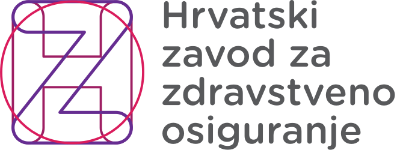

Naša priča
Dental arts Bijelić & Martić ima dugogodišnje iskustvo, posebno u stomatološkoj protetici. Surađujemo s renomiranim dentalnim laboratorijem, a nakon prvog pregleda procjenjujemo cjelokupno stanje u usnoj šupljini te donosimo individualni plan liječenja prilagođen vašim potrebama.
Naša filozofija
Vjerujemo da svaki pacijent zaslužuje individualni pristup i vrhunsku stomatološku skrb. Kontinuirano se educiramo i pratimo najnovije trendove u dentalnoj medicini kako bismo vam pružili najbolju moguću uslugu.
Naša obećanja
Ugovorni partner HZZO-a
Pružamo usluge i kroz Hrvatski zavod za zdravstveno osiguranje, pa određene stomatološke usluge možete ostvariti putem zdravstvenog osiguranja.
